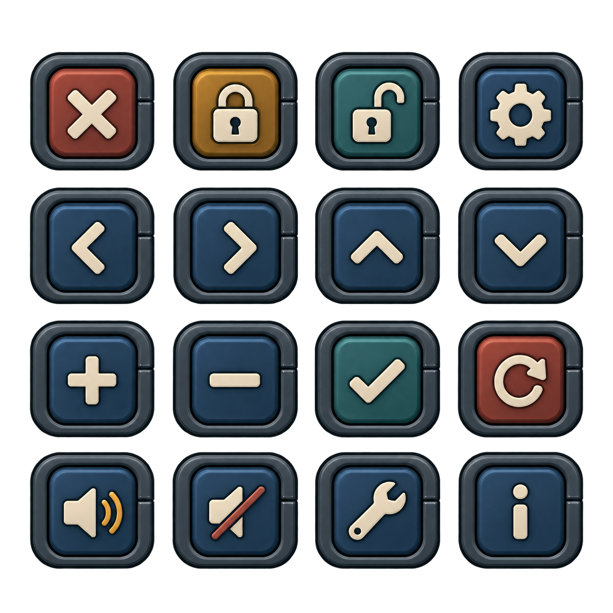

Маленькие кнопки действий
Матовые корпуса в стиле пульта корабля. 16 кнопок на прозрачном фоне.

- Закрыть · Замок · Открытый замок · Настройки
- Назад · Вперёд · Вверх · Вниз
- Плюс · Минус · Подтвердить · Сброс
- Звук · Без звука · Ремонт · Информация
Создано встроенным image_gen. PNG сохранён рядом, в приложение пока не подключён.
Запрос генерации и порядок кнопок · Остальная графика